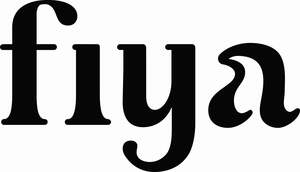

Trade Mark Journal No.2025/038 19 September 2025
UK00004259993 5 September 2025 (4,11,20,21,34,35)
Mark 1
FIYA
Mark 2

- Class 4
- Solid fuels; fuel pellets; fuels for heating and cooking purposes; combustible substances for use in heating apparatus; firelighters; firewood; briquettes; charcoal for use as fuel; coal; wood for use as fuel; wood chips for use as fuel; wood pellets for heating; kindling; wood logs for fuel.
- Class 11
- Apparatus for heating and cooking; heating furnaces; outdoor heaters; stoves for heating; fire pits; fire tables; portable fire pits; wood fired heating and cooking apparatus; domestic gas lighters; parts, fittings and accessories for all of the foregoing goods.
- Class 20
- Storage furniture; storage racks; storage racks for firewood; parts, fittings and accessories for all of the foregoing goods.
- Class 21
- Household containers and utensils; buckets; containers for firelighters and firewood; insulated household gloves; parts, fittings and accessories for all of the foregoing goods.
- Class 34
- Matches.
- Class 35
- Loyalty, incentive and bonus program services; product demonstrations and product display services; providing consumer product advice; provision of information and advice to consumers regarding the selection of products and items to be purchased; promotion of goods and services through sponsorship; promotion of goods and services through sponsorship of events; retail services, online retail store services, wholesale services and pop-up store retail services, all connected with the sale of solid fuels, fuel pellets, fuels for heating and cooking purposes, combustible substances for use in heating apparatus, firelighters, firewood, briquettes, charcoal for use as fuel, coal, wood for use as fuel, wood chips for use as fuel, wood pellets for heating, kindling, wood logs for fuel, apparatus for heating and cooking, heating furnaces, outdoor heaters, stoves for heating, fire pits, fire tables, portable fire pits, wood fired heating and cooking apparatus, domestic gas lighters, storage furniture, storage racks, storage racks for firewood, household containers and utensils, buckets, matches, bedding for animals, wood shavings for animal bedding, bedding of straw for animals, insulating gloves, gloves for protection against accidents and injury, insulating gloves for protection against fire, containers for firelighters and firewood and parts, fittings and accessories for all of the foregoing goods; information, advisory and consultancy services in relation to the foregoing.
Jack Pink Ltd
Representative: Springbird IP Limited